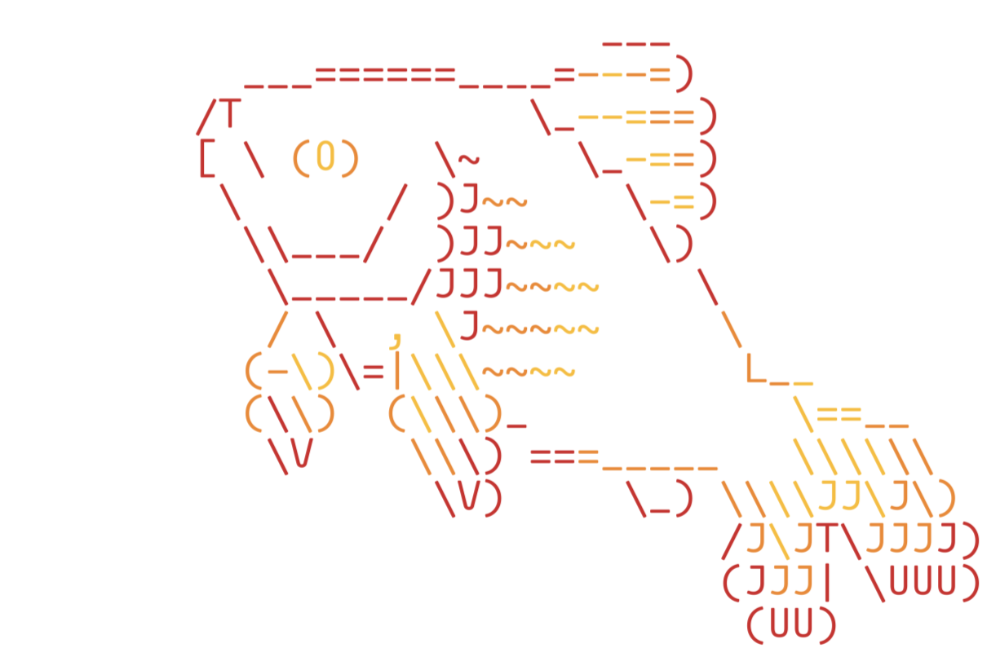

This section is under development. Thank you for your patience.
In Unix/Linux environments, the terms “Shell” and “Terminal” are commonly used and are related, but they refer to different things:
Shells
A Shell in Unix/Linux is a program that interprets commands and acts as an intermediary between the user and the kernel of the operating system. The shell processes user commands, which might involve calling other programs, and returns the output to the user. Shells can be either command-line based or graphical. Some popular examples of shells include Bash, Zsh, and Fish.
You can use the following commands to discover which shell you’re currently:
echo$SHELL# /bin/zsh
ps-p$$# PID TTY TIME CMD# 683 ttys000 0:00.09 -zsh
Bash
Bash, or the Bourne Again SHell, is one of the most widely used shells in Unix and Linux environments. Incorporating features from the Korn shell (ksh) and the C shell (csh), Bash supports features like command history, tab completion, aliases and scripting tasks.1
Key features of Bash
Programming Features
Bash includes an array of programming constructs that make it a powerful tool for scripting, which includes:
- Conditional statements (if, then, else, elif, fi) - Looping statements (for, while, until) - Functions that allow code reusability
Command Line Editing
Bash provides an interactive command line editing environment with features:
History expansion: Commands can be re-executed by recalling them from the history
Command line editing: Users can navigate and edit commands directly on the command line using Emacs or Vi editing modes
Tab Completion: Bash supports tab completion for command names, file names, and even command arguments, speeding up the input process and reducing typos
Job Control
Bash offers comprehensive job control, which includes:
Backgrounding (&), foregrounding (fg), and job management (jobs, bg)
Stopping (suspending) processes and continuing them with kill and kill -CONT
Aliases and Shell Functions
Users can create shorter commands to represent longer sequences of commands using aliases. Bash also supports more powerful functions that can take arguments like small scripts.
Redirection and Piping
Bash allows for advanced redirection and piping:
Redirecting input and output (>, <, >>, 2>, etc.)
Piping commands (|) are used to pass the output of one command as input to another
Script Debugging
Bash scripts can be debugged using options like set -x to print commands and their arguments as they are executed, which is invaluable for troubleshooting scripts
Environment Control
Bash allows users to control their shell environment extensively through:
Environment variables configuration and management
Variables are exported to make them available to sub-processes
Expansion Capabilities
Bash supports several types of expansions that enhance its scripting capabilities:
Brace expansion: {a,b,c}
Tilde expansion: ~ translates to the home directory.
Parameter and variable expansion: $name or ${name}
Arithmetic expansion: $(( expression )0
History Features
Bash maintains a history of commands that users have executed, which can be navigated, searched, and reused. It also supports configuring the history size and behavior through various environment variables like HISTSIZE and HISTFILESIZE.
Zsh
Zsh (Z Shell or ‘Oh My ZSH!’) is noted for its interactive features and is often used with customization frameworks. Zsh is a powerful command-line interpreter for Unix systems that serves as both a scriptable shell and an interactive command interpreter.2
Key features of Zsh
Command Line Editing
Zsh provides an advanced and customizable command-line editing environment. Users can configure key bindings and have extensive control over the text editing capabilities directly within the command prompt.
Tab Completion
Zsh has one of the most powerful tab completion systems. It supports:
Completion for command options and arguments.
Automatic listing of options when a tab is hit twice.
Context-sensitive completion that can recognize patterns in filenames, history, running processes, hostnames, and more.
Themes and Prompts
Zsh allows extensive customization of its prompt, supporting themes that can completely change the look of your command line. The prompt can include colors, content from shell variables, functions, and command outputs.
Scripting
Zsh scripting is robust, with features like arrays, associative arrays, and floating-point arithmetic which are not typically available in all shells. It enhances scripting capabilities and improves on the scripting syntax of the Bourne Shell.
Loadable Modules: Zsh supports dynamically loadable modules, expanding its capabilities with features like:
FTP client
TCP and UDP socket operations
Advanced math functions
Full-fledged regular expression matching
Improved Variable Handling
Variable handling in Zsh includes several enhancements like:
Better array handling
Associative arrays (similar to dictionaries in higher-level programming languages)
Easier string manipulation and pattern matching
Spell Check and Correction
Zsh can be configured to correct commands automatically if misspelled and to suggest corrections or alternatives. This feature helps in reducing syntax errors and improves user efficiency.
Extended Globbing
Zsh’s file globbing allows for more complex pattern matching than traditional Unix shells. You can specify patterns in a more expressive and powerful way, which is particularly useful in scripts.
Fish
Fish, or the Friendly Interactive SHell, is a smart and user-friendly command line shell for Unix-like operating systems. It’s designed to be more interactive and user-friendly than traditional shells like Bash or Zsh.3
Key features of  Fish
Autosuggestions
Fish suggests commands as you type based on history and completions, just like a web browser. This feature allows users to see and reuse previous commands by simply pressing the right arrow key to complete the suggested command, which can significantly speed up typing and reduce errors.
Syntax Highlighting
One of Fish’s most noticeable features is its real-time syntax highlighting. Commands that are valid change color as you type them. It also helps users catch errors before the command is executed, such as highlighting misspelled commands or incorrect paths in red.
Web-Based Configuration
Fish includes a web-based configuration interface (accessible via the fish_config command), which makes customizing the shell settings and prompt easier for users who prefer a graphical interface over editing configuration files manually (or if you’re new to the command line).
Enhanced Tab Completion
Fish provides intelligent tab completions for commands, file names, variables, and user-defined functions. It not only completes based on the prefix but also considers the whole line context, making the completions more relevant.
Improved Variables and Scoping
Fish simplifies variable management, including universal variables that are automatically shared between all running shells and persist across restarts without needing explicit saving to a file. Variable scoping is also more straightforward, helping avoid common bugs seen in other shells.
Function Autoloads
Fish allows functions to be defined in individual files and automatically loads them only when needed. This lazy-loading of functions helps speed up the start time of the shell.
Extensible
Fish is designed to be easily extensible through plugins. The Fisherman and Oh My Fish frameworks offer many plugins and themes designed to enhance Fish’s capabilities or customize its appearance.
Man Page Completions
Fish generates command completions automatically from man pages, which means it often supports completions for all the installed commands without needing special configuration.
No Configuration Needed
Fish is designed to work properly out of the box, without needing to configure it extensively. This makes it very accessible for new users or those who want a powerful shell without the need to customize or configure it heavily.
User-Friendly Scripts
Fish uses a syntax that is slightly different from the traditional POSIX shell syntax, which is often simpler and easier to understand. For example, loops and conditionals are clearer, and there is no need for explicit subshell management.
Terminals
A Terminal (or terminal emulator) is a software program that provides a text-based interface to the shell. Terminals interpret keystrokes and commands from users and send these to the shell for execution. When the shell produces output, the terminal displays it to the user. Terminal emulators allow users to interact with the shell and other command-line tools. Below is an expanded look at some commonly used terminal emulators and their key features.
GNOME
GNOME Terminal is the default terminal emulator for the GNOME desktop environment, widely used in many Linux distributions.
Key features of GNOME
Profiles: Users can create multiple profiles, each with its own set of preferences, including colors, fonts, and keyboard shortcuts.
Tabs and Splitting: Supports opening multiple tabs and can split the terminal window into multiple panes.
Transparency and Backgrounds: Allows setting background images and adjusting the transparency of the terminal window.
Compatibility: Supports UTF-8 for a wide range of characters, making it suitable for international use.
Konsole
Konsole is part of the KDE desktop environment. It is known for its deep integration with KDE and its high degree of customizability.
Key features of Konsole
Tabbed Interface: Allows multiple tabs within a single window, facilitating multitasking.
Profiles: Supports multiple profiles, enabling different settings for each session.
Split Views: Users can split Konsole windows horizontally or vertically.
Transparency and Theming: Supports background transparency and themes, which can be customized easily.
iTerm2
iTerm2 is a replacement for Terminal and the successor to iTerm for macOS. It offers features beyond what traditional terminals provide.
Key features of iTerm2
Split Panes: Users can divide iTerm2 into multiple panes, each with its own session.
Search: iTerm2 allows users to search through text and highlights occurrences.
Profiles: Supports detailed profiles, each with its custom colors, fonts, window transparency, and key bindings.
Advanced Paste Features: Offers a paste history and allows pasting with escape codes to avoid issues with unintended command executions.
Mouseless Copy: iTerm2 lets you use keyboard shortcuts to select and copy text without needing the mouse.
Shell Integration: iTerm2 can integrate with the shell to display badges, track command statuses, and more.
Trigger Support: Executes user-defined actions based on text output to the terminal.
Each of these terminal emulators offers unique features that cater to different needs and preferences, enhancing the user’s command-line experience. Whether you need deep customization, minimal resource usage, or advanced functionalities like search and shell integration, there’s a terminal emulator that fits the requirement.
Recap
In summary, the shell is the command interpreter that executes the commands, while the terminal is the application that allows you to interact with the shell.
 Bash
Bash Fish
Fish